Blink
Documento PDF: Práctica Blink
Ver o descargar PDF: Práctica Blink
Video de funcionamiento.

Proyecto creado con un fin de aprendizaje para la asignatura de Redes Industriales.
A continuación se encuentra el portfolio de la teoría vista en la asignatura.
A continuación se encuentran los test de seguimiento de la asignatura:


 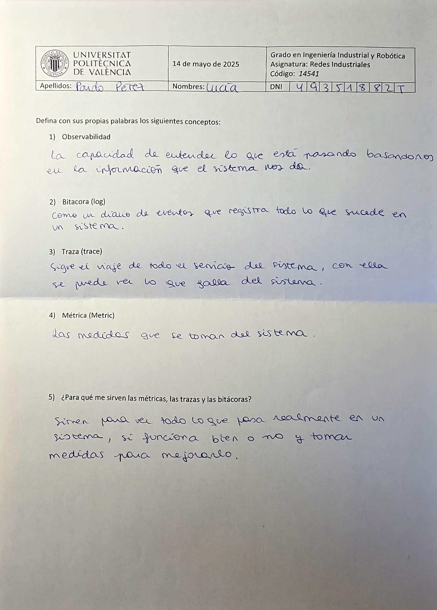
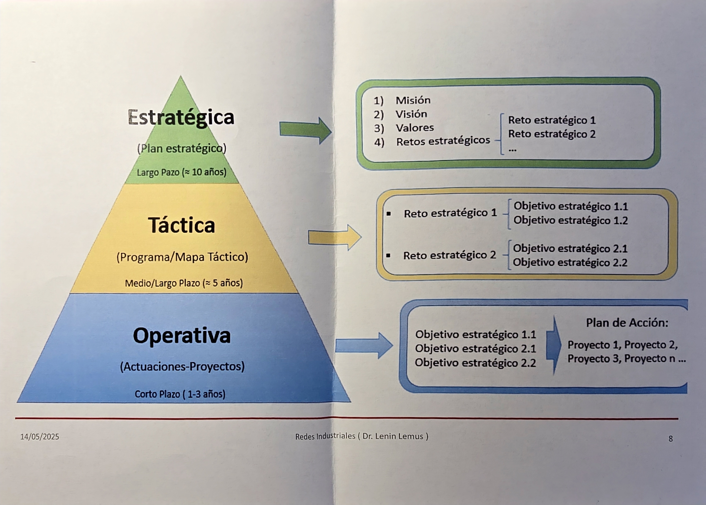
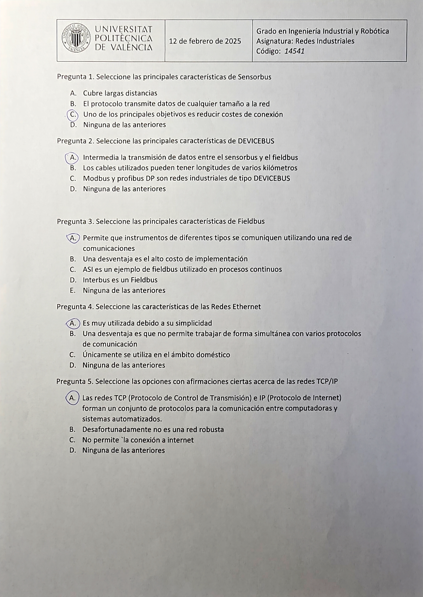
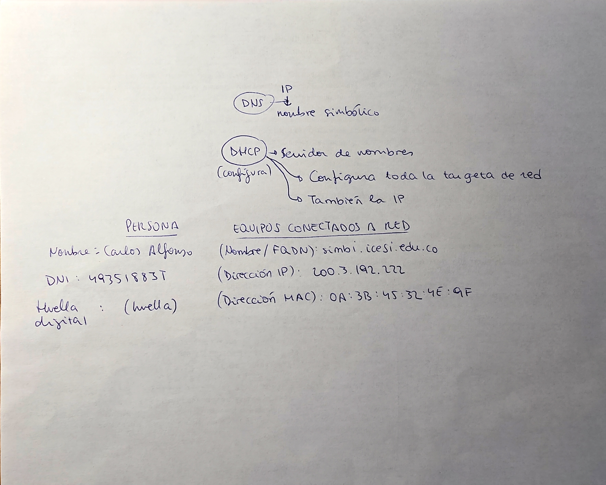
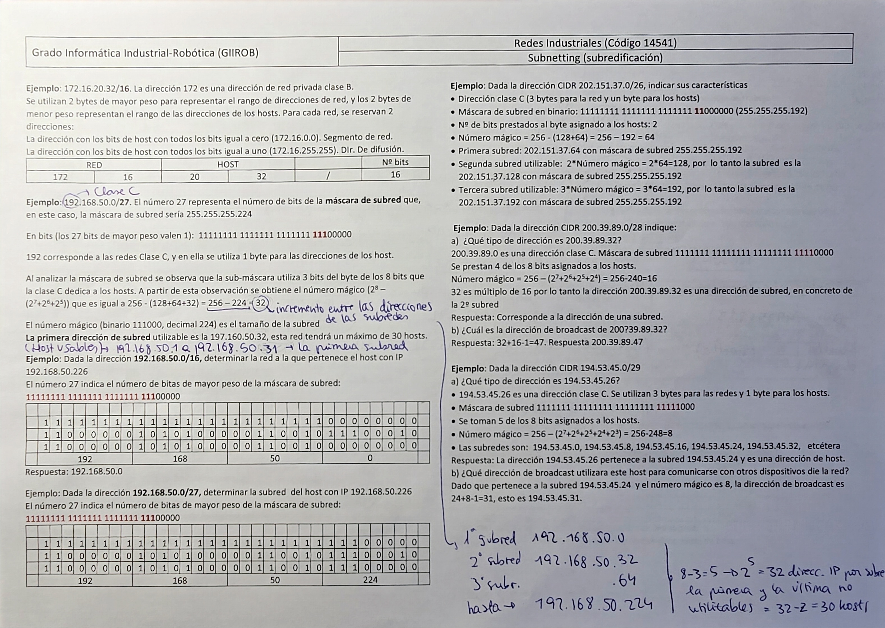
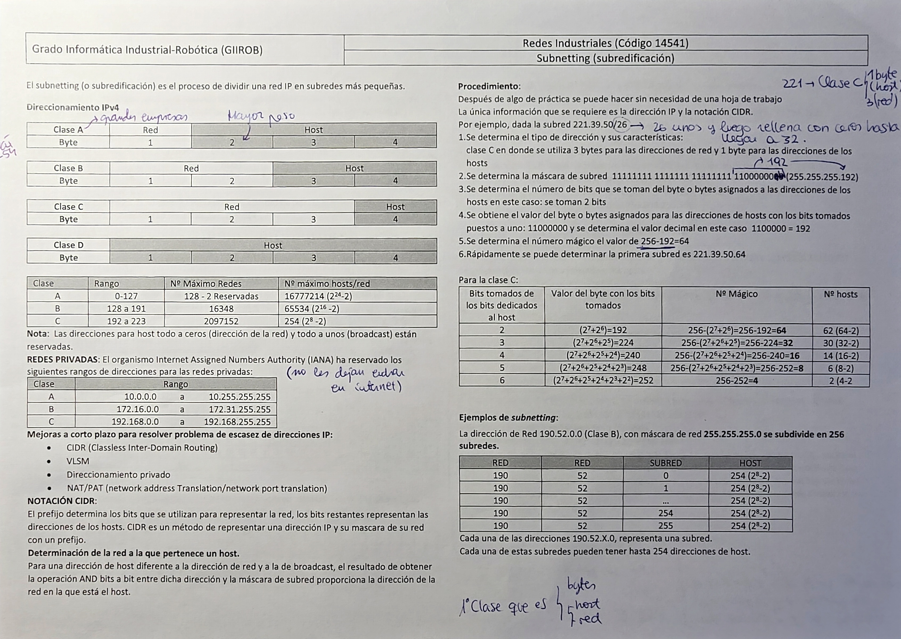
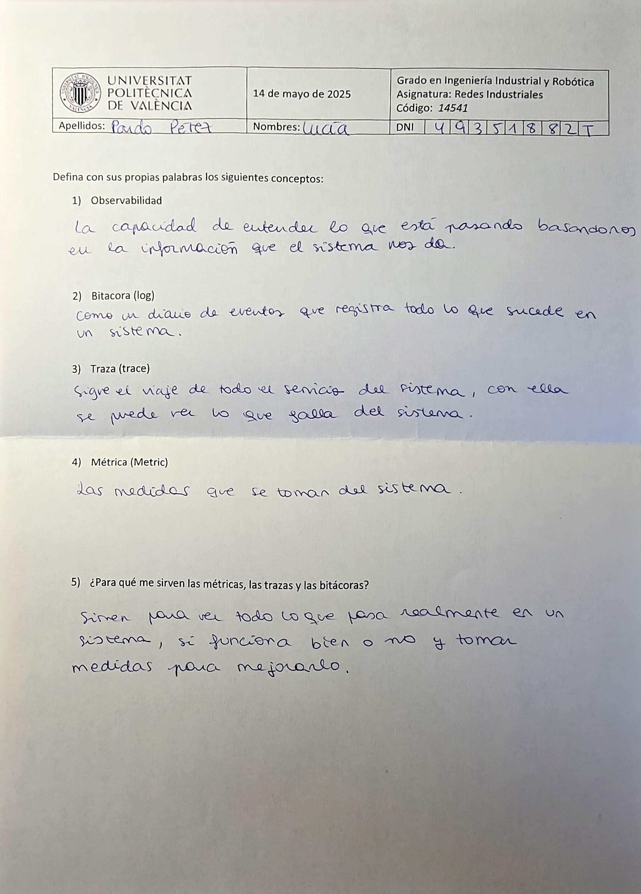
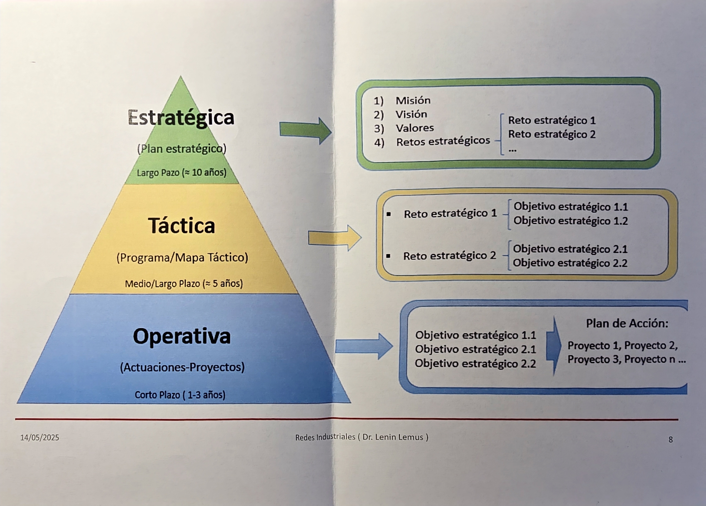
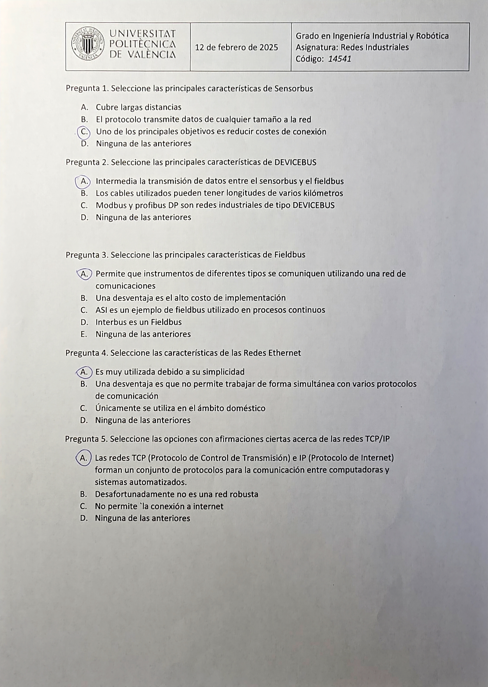
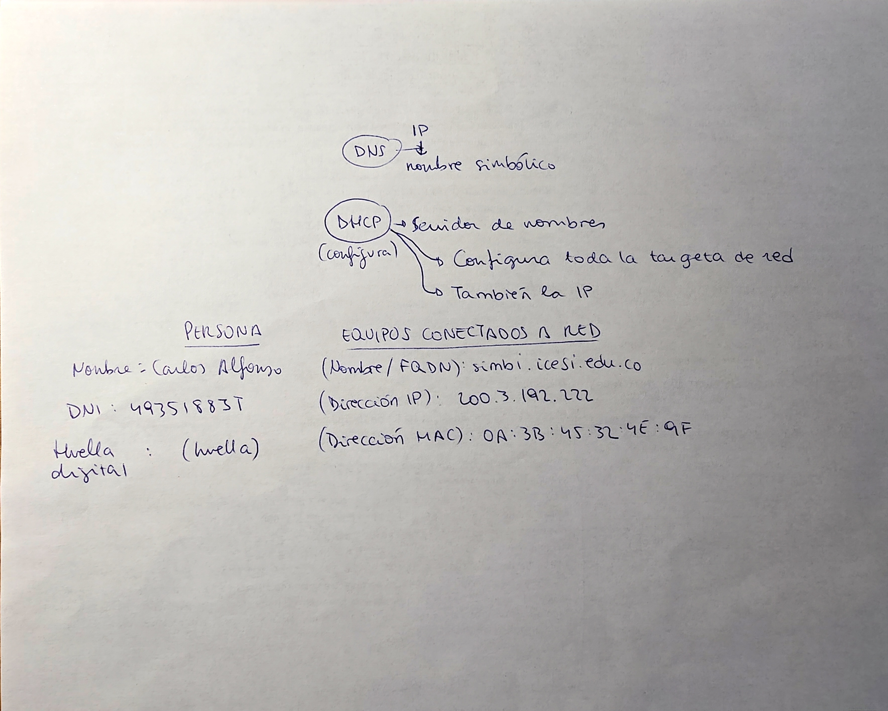
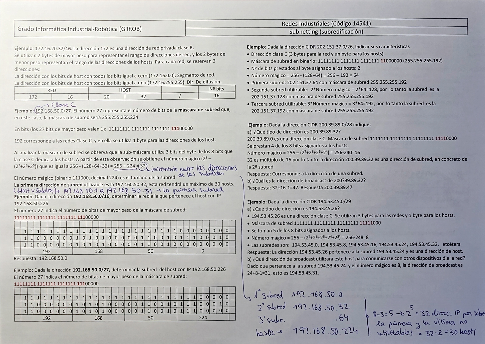
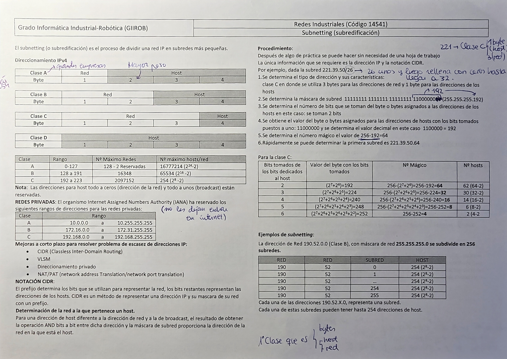
Ver o descargar PDF: Práctica Blink
Video de funcionamiento.
Ver o descargar PDF: Práctica Transmisión BLE
Video de funcionamiento.
Ver o descargar PDF: Práctica BLE_LED
Video de funcionamiento.
Ver o descargar PDF: Práctica BLE Ampliación
Video de funcionamiento.
Video de funcionamiento.
Ver o descargar PDF: Práctica Modo AP + Station
Video de funcionamiento.
Imagen de Wifi.
En esta sección se muestran códigos, imágenes y videos de las comunicaciones que hemos logrado conectando dos dispositivos ESP32-S3 utilizando varios métodos diferentes.
Ver o descargar PDF: Práctica Comunicación UART
Video de funcionamiento.
Imagen de funcionamiento.
Video de funcionamiento.
Imagen de funcionamiento.
Ver o descargar PDF: Práctica Comunicación RS485
Video de funcionamiento.
Imagen de funcionamiento.
Video de funcionamiento.
Imagen de funcionamiento.
Ver o descargar PDF: Práctica Comunicación CAN
Imágenes de funcionamiento.
Ver o descargar PDF: Proyecto Final Coche RC
Imagen del terminal corriendo Mosquitto.
Fotografía del chasis del coche con el ESP32-S3, motor paso a paso, servomotor, buzzer, led...
Fotografía de la consola que muestra el resultado del análisis de datos.
La imagen muestra la aplicación Light Blue conectada al dispositivo.
La imagen muestra a MQTT Explorer conectado al broker local.
La imagen muestra el Monitor Serie.
Videos de funcionamiento del coche.